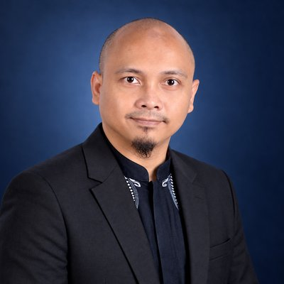
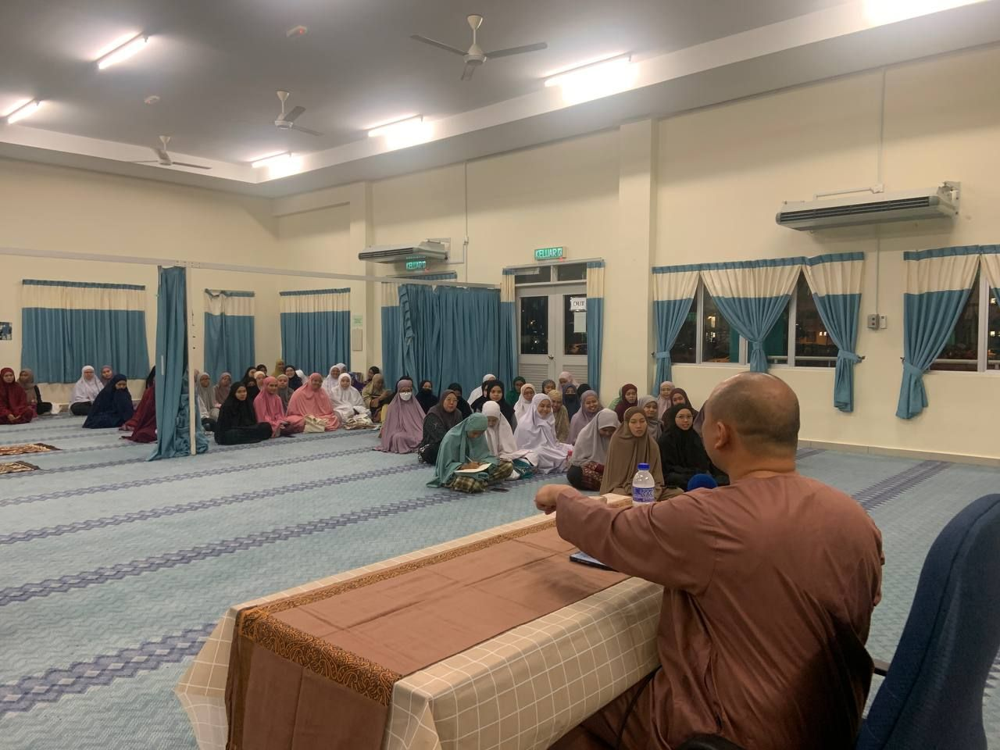
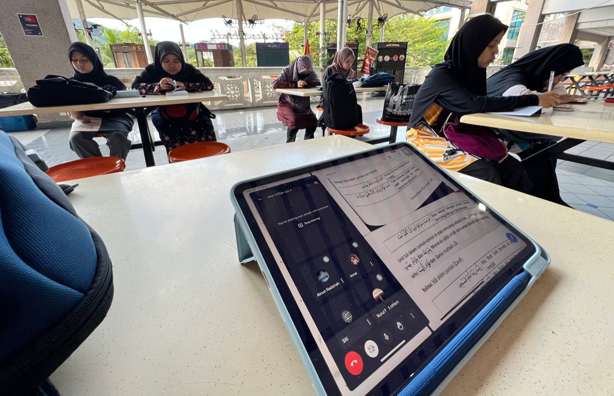
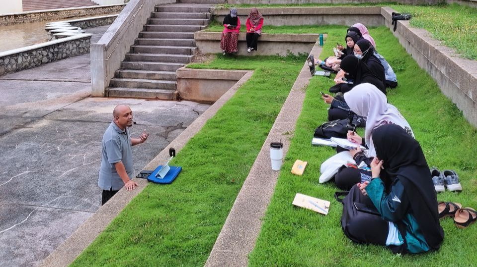
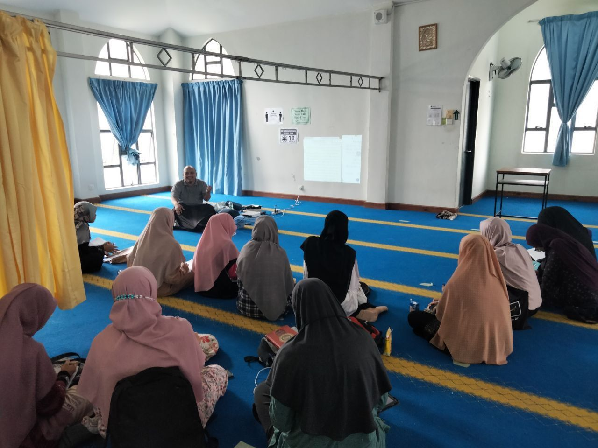
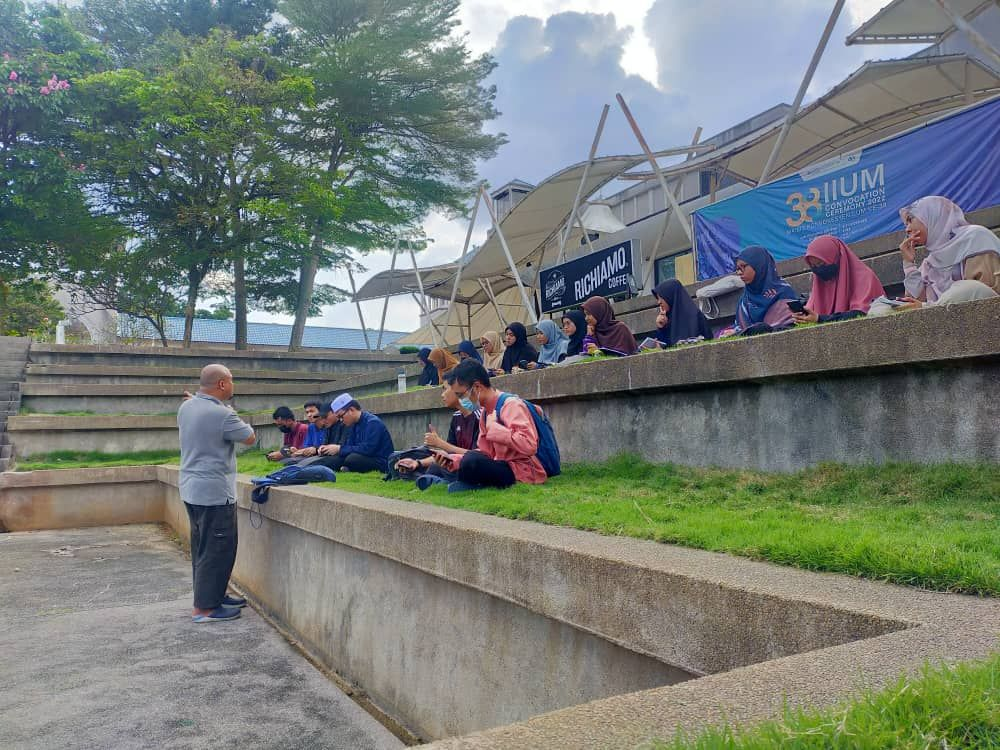
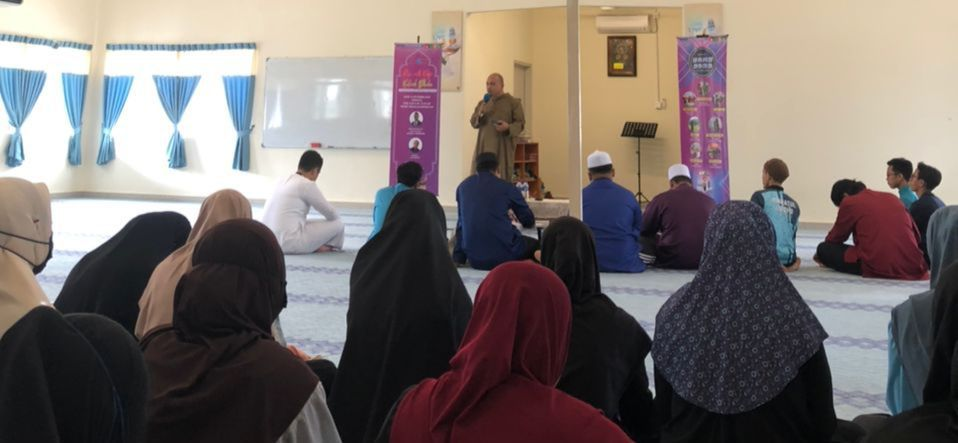

Ahmad Syarief bin Fadhli
ProfilProfile نبذة
Graduan Sarjana Quran & Sunnah Studies (IIUM) yang mempunyai tauliah agama di Selangor dan Wilayah Persekutuan. Sejak 2016 aktif membaca dan mensyarahkan kitab-kitab Arab dalam Ulum al-Quran, Ulum al-Hadith, Tafsir, Hadis dan Sirah, serta menterjemah teks Arab asal ke Bahasa Melayu dan English. Mencari peluang untuk mengajar Ulum al-Quran dan Ulum al-Hadith, membimbing pelajar membaca dan menterjemah kitab, dan melatih cara menyampaikan kuliah yang berasaskan sumber.
Master's graduate in Quran & Sunnah Studies (IIUM), accredited to teach religion in Selangor and the Federal Territories. Since 2016 he has read and explained classical Arabic works in Ulum al-Quran, Ulum al-Hadith, Tafsir, Hadith and Sirah, and translated original Arabic texts into Malay and English. He is seeking roles teaching Ulum al-Quran and Ulum al-Hadith, coaching students to read and translate classical texts (kitab), and training them to deliver source-based lectures.
PendekatanApproach: Baca sumber → Fahami maksud → Cari faedah → KongsiRead the source → Understand → Extract lessons → Share
Bidang PengajaranTeaching Areas مجالات التدريس
PengalamanExperience الخبرات
Pengasas & PengajarFounder & Instructor — #ProjekBSS / #BroSyariefShares
- Menulis nota terjemahan dan tadabbur daripada teks Arab asal (#NotaTerjemahanBSS, #NotaTadabburBSS) di brosyarief.com.
- Publishes translation and tadabbur notes from original Arabic sources (#NotaTerjemahanBSS, #NotaTadabburBSS) at brosyarief.com.
- Menyelaras sesi bacaan kitab dalam talian secara percuma (Google Meet) bersama PIC sukarelawan.
- Coordinates free online kitab-reading sessions (Google Meet) run with volunteer facilitators.
Penceramah Kuliah BerkitabText-Based Lecturer
- Masjid Jumhuriyyah, Taman Dato' Harun — Riyadh al-Salihin
- Madrasah Hilaliyah — Riyadh al-Salihin
- Surau Al-Azhar, KAFA Integrasi Al-Azhar — Tafsir al-Quran
- Masjid Nurul Jannah — Khutuwat ila al-Sa'adah
- Anjung Quran Sunnah (AQS) — Khutuwat ila al-Sa'adah
- Surau Qardul Hasan — Khutuwat ila al-Sa'adah
- Surau Platinum Al-Mawaddah — Sirah Adam
Guru Sepenuh MasaFull-Time Teacher — Ahlan Academy for Excellence
- Mengajar Pengajian Islam (Aqidah, Fiqh, Akhlak, Sirah) bagi program Ahlan Thinker & Ahlan Scholars dalam Bahasa Inggeris.
- Teaches Islamic Studies (Aqidah, Fiqh, Akhlaq, Sirah) in English for the Ahlan Thinker & Ahlan Scholars programmes.
- Menyediakan bahan pengajaran, buku kerja dan teacher's copy berasaskan al-Quran dan hadis.
- Develops lesson materials, workbooks and teacher's copies grounded in Quran and hadith.
Trainer Sambilan & Fasilitator UsrahPart-Time Trainer & Usrah Facilitator — IIUM (STADD / CCD)
Imam & Pegawai PentadbiranImam & Administrative Officer — Surau An-Nur, RHB Centre
Graduate Research Assistant — Jamalullail Chair, IIUM
Conference Executive — International Institute of Advanced Islamic Studies (IAIS) Malaysia
Project Manager — K Fiqh Sdn Bhd (K-FIQH)
Secretariat — MURSHID (Multaqa Asatizah & Duat)
Galeri PengajaranTeaching Gallery من مجالس العلم






Kitab yang Diajar & DibacaTexts Taught & Read الكتب المقروءة
Sesi Bacaan Kitab Dalam TalianOnline Kitab-Reading Sessions
Sesi #BSS yang sedang berjalan, percuma melalui Google Meet.Ongoing #BSS sessions, free on Google Meet.
| Kitab | BidangField | KekerapanFrequency |
|---|---|---|
| al-Tafsir al-Wajiz | Tafsir | Setiap hariDaily |
| Tahrir 'Ulum al-Hadith | Ulum al-Hadith | Sabtu & AhadSat & Sun |
| Sunan Abi Dawud | HadisHadith | MingguanWeekly |
| 'Umdat al-Salik | Fiqh Syafi'iShafi'i Fiqh | Isnin – JumaatMon – Fri |
| Lata'if al-Ma'arif | TazkiyahSpirituality | Setiap hariDaily |
| al-Adhkar | Zikir & DoaDhikr & Du'a | MingguanWeekly |